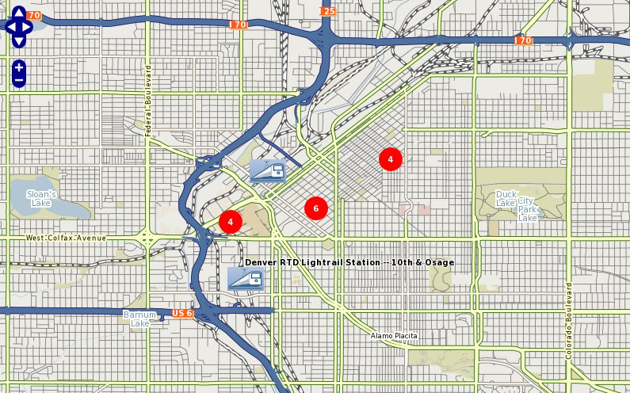

CLUSTER¶
Description¶
Since version 6.0, MapServer has the ability to combine multiple features from a point layer into single (aggregated) features based on their relative positions. Only POINT layers are supported. This feature was added through MS RFC 69: Support for clustering of features in point layers.
Supported Layer Types¶
Only layers of TYPE POINT are supported.
Mapfile Parameters¶
- MAXDISTANCE [double]
Specifies the distance of the search region (rectangle or ellipse) in pixel positions. Must be greater than 0.
- REGION [string]
Defines the search region around a feature in which the neighbouring features are negotiated. Can be ‘rectangle’ or ‘ellipse’.
- BUFFER [double]
Defines a buffer region around the map extent in pixels. Default is 0. Using a buffer allows that the neighbouring shapes around the map are also considered during the cluster creation.
- GROUP [string]
This expression evaluates to a string and only the features that have the same group value are negotiated. This parameter can be omitted. The evaluated group value is available in the ‘Cluster_Group’ feature attribute.
- FILTER [string]
We can define the FILTER expression filter some of the features from the final output. This expression evaluates to a boolean value and if this value is false the corresponding shape is filtered out. This expression is evaluated after the the feature negotiation is completed, therefore the ‘Cluster_FeatureCount’ parameter can also be used, which provides the option to filter the shapes having too many or to few neighbors within the search region.
Supported Processing Options¶
The following processing options can be used with the cluster layers:
- CLUSTER_GET_ALL_SHAPES=ON
Return all shapes contained by a cluster instead of a single shape. This setting affects both the drawing and the query processing (especially useful for GetFeatureInfo requests). Example usage: PROCESSING “CLUSTER_GET_ALL_SHAPES=ON”
- CLUSTER_KEEP_LOCATIONS=ON
Set whether the location of the cluster shape should be preserved (setting this will show all points in the cluster). Example usage: PROCESSING “CLUSTER_KEEP_LOCATIONS=ON”
- CLUSTER_ALGORITHM=SIMPLE
From MapServer 6.2 we can choose a more simplified clustering algorithm which performs better that the original (more accurate) approach. usage: PROCESSING “CLUSTER_ALGORITHM=SIMPLE” For more information see:
Bug 5503
- CLUSTER_USE_MAP_UNITS=ON
Provide scale independent clustering (maxdistance and the buffer parameters are specified in map units). Example usage: PROCESSING “CLUSTER_USE_MAP_UNITS=ON”
- ITEMS
Specify the feature attributes in the cluster to expose during a query, separated by a comma. Example usage: PROCESSING “ITEMS=attribute_x,attribute_y,attribute_z”
Mapfile Snippet¶
LAYER
NAME "my-cluster"
TYPE POINT
...
CLUSTER
MAXDISTANCE 20 # in pixels
REGION "ellipse" # can be rectangle or ellipse
GROUP (expression) # an expression to create separate groups for each value
FILTER (expression) # a logical expression to specify the grouping condition
END
LABELITEM "Cluster_FeatureCount"
CLASS
...
LABEL
...
END
END
...
END
Feature attributes¶
The clustered layer itself provides the following aggregated attributes:
Cluster_FeatureCount - count of the features in the clustered shape
Cluster_Group - The group value of the cluster (to which the group expression is evaluated)
Note
If you are using MapServer version 6.x these attributes contain a “:” in their names instead, such as Cluster:FeatureCount & Cluster:Group. The “_” was changed in MapServer 7.
These attributes (in addition to the attributes provided by the original data source) can be used to configure the labels of the features and can also be used in expressions. The ITEMS processing option can be used to specify a subset of the attributes from the original layer in the query operations according to the user’s preference.
We can use simple aggregate functions (Min, Max, Sum, Count) to specify how the clustered attribute should be calculated from the original attributes. The aggregate function should be specified as a prefix separated by ‘:’ in the attribute definition, like: [Max:itemname]. If we don’t specify aggregate functions for the source layer attributes, then the actual value of the cluster attribute will be non-deterministic if the cluster contains multiple shapes with different values. The Count aggregate function in fact provides the same value as Cluster_FeatureCount.
Handling GetFeatureInfo¶
If you want to allow WMS GetFeatureInfo on all features inside a cluster, you must 1) set the “wms_include_items” metadata as usual, and 2) set the following PROCESSING parameters in the layer:
PROCESSING "CLUSTER_GET_ALL_SHAPES=ON"
PROCESSING "ITEMS=attribute_x,attribute_y,attribute_z"
So your layer might look like the following:
LAYER
NAME "my-cluster"
TYPE POINT
METADATA
"wms_title" "myttitle"
"wms_include_items" "all"
END
...
CLUSTER
...
END
LABELITEM "Cluster_FeatureCount"
CLASS
...
LABEL
...
END
END
...
PROCESSING "CLUSTER_GET_ALL_SHAPES=ON"
PROCESSING "ITEMS=name,description"
END
PHP MapScript Usage¶
The CLUSTER object is exposed through PHP MapScript. An example follows:
$map = ms_newMapobj("/var/www/vhosts/mysite/httpdocs/test.map");
$layer1=$map->getLayerByName("test1");
$layer1->cluster;
Example: Clustering Railway Stations¶
The following example uses a point datasource, in this case in KML format, to display clusters of railway stations. Two classes are used: one to style and label the cluster, and one to style and label the single railway station.
Note
Since we can’t declare 2 labelitems, for the single railway class we use the TEXT parameter to label the station.
Mapfile Layer¶
####################
# Lightrail Stations
####################
SYMBOL
NAME "lightrail"
TYPE PIXMAP
IMAGE "../etc/lightrail.png"
END
LAYER
NAME "lightrail"
GROUP "default"
STATUS DEFAULT
TYPE POINT
CONNECTIONTYPE OGR
CONNECTION "lightrail-stations.kml"
DATA "lightrail-stations"
LABELITEM "Cluster_FeatureCount"
CLASSITEM "Cluster_FeatureCount"
###########################
# Define the cluster object
###########################
CLUSTER
MAXDISTANCE 50
REGION "ellipse"
END
################################
# Class1: For the cluster symbol
################################
CLASS
NAME "Clustered Lightrail Stations"
EXPRESSION ("[Cluster_FeatureCount]" != "1")
STYLE
SIZE 30
SYMBOL "citycircle"
COLOR 255 0 0
END
LABEL
FONT scb
TYPE TRUETYPE
SIZE 8
COLOR 255 255 255
ALIGN CENTER
PRIORITY 10
BUFFER 1
PARTIALS TRUE
POSITION cc
END
END
################################
# Class2: For the single station
################################
CLASS
NAME "Lightrail Stations"
EXPRESSION "1"
STYLE
SIZE 30
SYMBOL "lightrail"
END
TEXT "[Name]"
LABEL
FONT scb
TYPE TRUETYPE
SIZE 8
COLOR 0 0 0
OUTLINECOLOR 255 255 255
ALIGN CENTER
PRIORITY 9
BUFFER 1
PARTIALS FALSE
POSITION ur
END
END
# the following is used for a query
TOLERANCE 50
UNITS PIXELS
HEADER "../htdocs/templates/cluster_header.html"
FOOTER "../htdocs/templates/cluster_footer.html"
TEMPLATE "../htdocs/templates/cluster_query.html"
END
Map Image¶
